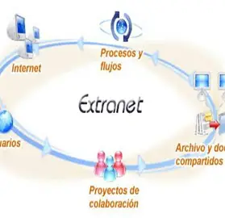

Extranet

An extranet is a private network that allows controlled access to external users
such as customers, suppliers, partners, or other authorized stakeholders. It extends
a company’s intranet beyond its internal users while still maintaining security and control.
Extranets use internet technologies such as web browsers and secure connections
to enable communication and data sharing between organizations and trusted external users.
Features of an Extranet
- Restricted access for authorized external users
- Secure sharing of information between organizations
- Uses internet-based technologies (HTTP, web browsers)
- Controlled by the organization that owns the system
Uses of an Extranet
- Sharing business data with suppliers and partners
- Managing customer accounts and services
- Collaborating on projects between organizations
- Providing clients with access to order tracking systems
Advantages
- Improves communication between organizations
- Enhances business collaboration
- Reduces delays in information sharing
- Increases efficiency in business operations
Limitations
- Security risks if not properly managed
- Requires strong authentication systems
- Can be expensive to set up and maintain
In summary, an extranet is an important business tool that enables secure and
efficient collaboration between an organization and its external partners.